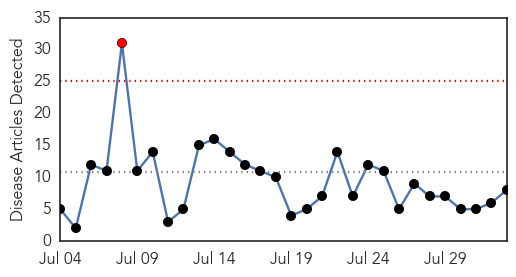
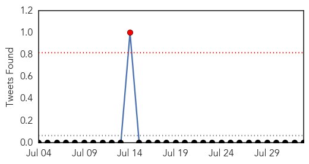
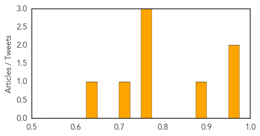

Dengue Fever
30-Day Web Trend
0 alerts, 0 warnings

30-Day Twitter Trend
0 alerts, 0 warnings

Article Locations

Article Confidences

Top Articles:
Top Tweets:
-
No tweets found for Aug 02, 2015
Influenza
30-Day Web Trend
1 alerts, 0 warnings

30-Day Twitter Trend
0 alerts, 0 warnings

Article Locations

Article Confidences
Top Articles:
- 0.967
- More than 1.2m flu vaccine doses distributed
- 0.957
- U.S., Hong Kong researchers develop computer model to examine spread of influenza
- 0.877
- We are now mid-flu-season – vaccinate or mask up « LiveNews.co.nz
- 0.751
- August 2, 2015 Archives
- 0.751
- August 1, 2015 Archives
- 0.751
- August 1, 2015 Archives
- 0.713
- Worker fired over hospital's hardline vaccination policy
- 0.645
- Health worker sacked for refusing to comply with board policy
Top Tweets:
-
No tweets found for Aug 02, 2015